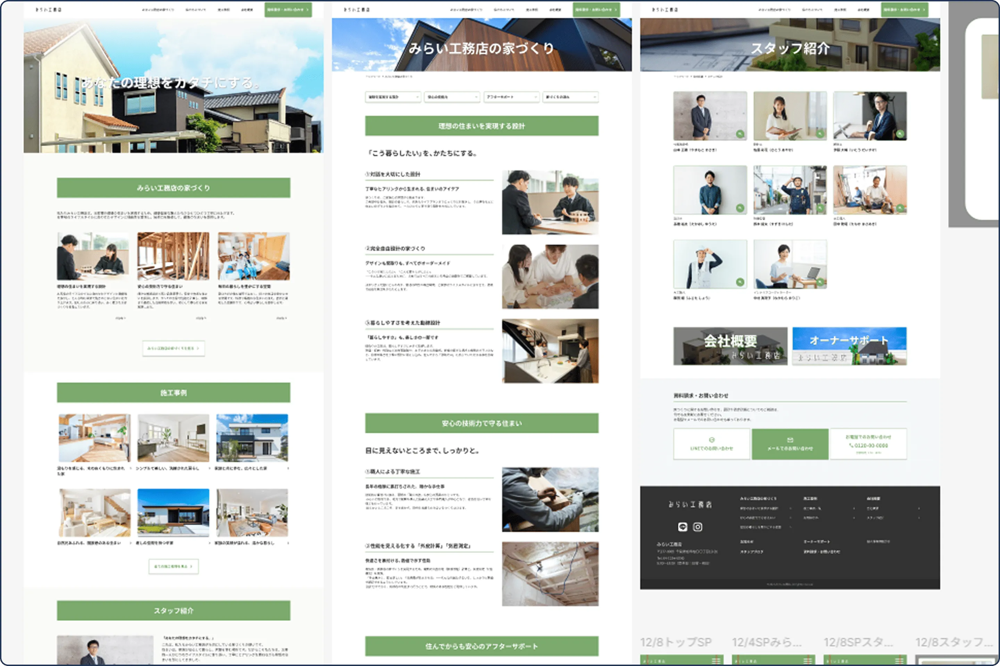
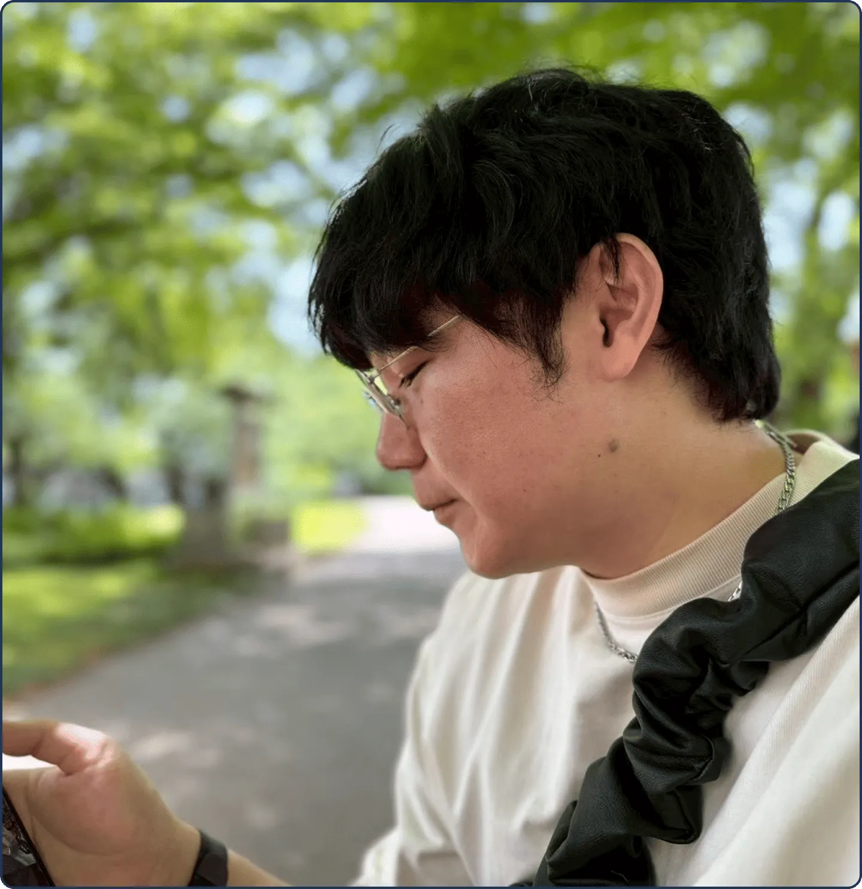
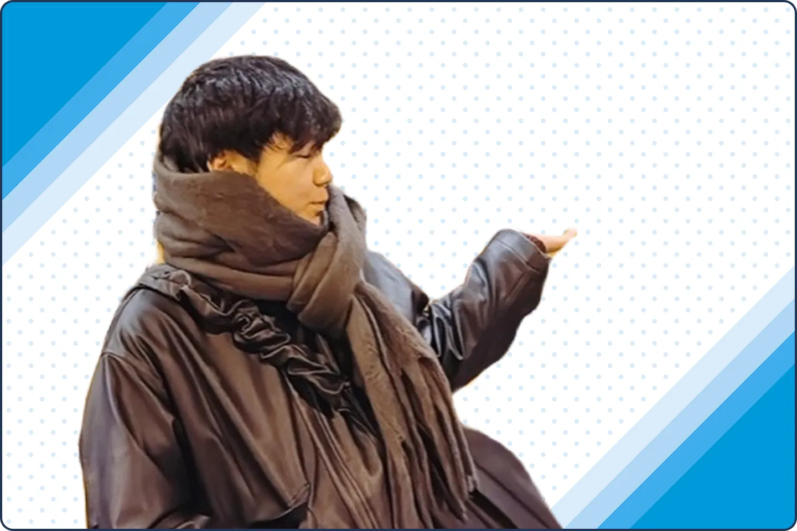
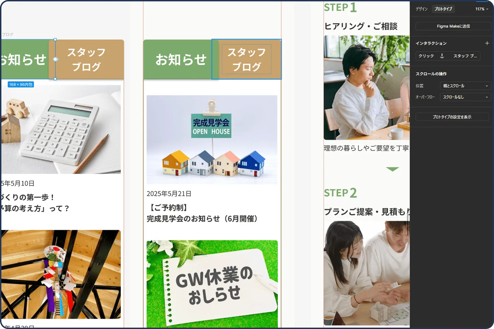
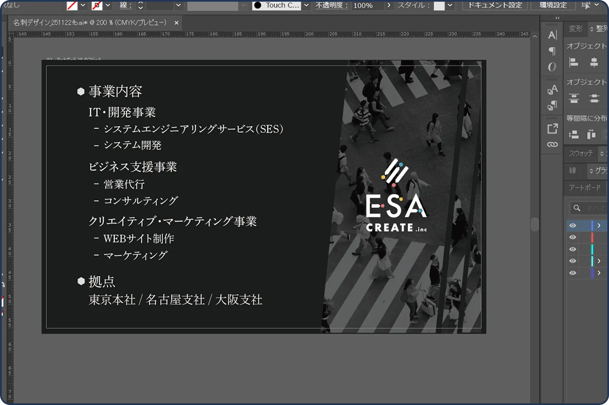
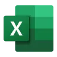
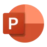
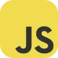

Webサイト
地域密着型工務店の住宅購入者向けコーポレートサイトのデザイン制作
新築住宅の購入・リフォームを考えている30～50代の家庭を持つ夫婦をターゲットに新規顧客獲得・信頼性向上・問い合わせの促進を目的としたコーポレートサイトのデザイン。問い合わせの促進のため、サービス内容やFAQなど、ユーザーが抱くであろう疑問を先回りして解決する情報設計。
- ワイヤーフレーム
- PCデザイン
- SPデザイン

YAMAGUCHI AOI
山口 碧
1996年生まれ。中京大学卒業後、ドラッグストアで店舗スタッフから店長まで経験しました。売場づくりを通して「伝え方」や「見せ方」が人の行動を変える面白さを知り、Webデザイナーへ転身しました。
現在はHTML / CSS / JavaScriptを学びながら、情報設計・UIデザイン・実装の両面からWeb制作に取り組んでいます。現場で培った利用者視点を活かし、目的に寄り添った制作を大切にしています。
デザインと実装を行き来しながら、意図が伝わり、更新しやすいWebサイトを制作します。


Figmaを使用して、Webサイトやバナーのデザインを制作しています。
ワイヤーフレームやプロトタイプを作成し、実装のしやすさを意識した設計を心がけています。
パーツやコンポーネントを整理することで、全体の統一感を保ちつつ、修正や運用がしやすい構造に整えています。また、ボタン配置や余白、フォントのサイズ感など、ユーザーの視認性や操作性にも配慮したUIデザインも行っています

提供素材の調整や切り抜きなど、Photoshopを使用して画像加工やレタッチを行っています。
Illustratorを用いた文字組みや図形制作にも対応可能です。
視線を引きつけ、訴求内容がひと目で伝わるよう、配色・文字サイズ・余白のバランスまで丁寧に調整しています。目的やターゲットに応じて、複数パターンのデザイン提案を行うこともあります。
チーム内外のコミュニケーションツールとして使用。案件ごとのチャンネル運用、進行状況の共有、デザイナー・エンジニア間のやり取りを円滑に行っています。必要に応じて通知設計やスレッド活用を行い、情報の整理と伝達効率を意識しています。
HTML / CSS / JavaScript のコーディングを中心に使用。拡張機能を活用した効率的な開発環境を構築し、保守性を意識したコード記述を行っています。デザインデータを正確に反映した実装を心がけています。

MOS資格を取得しており、基本操作から関数・表作成まで一通り対応可能です。 実務で使用する機会は多くありませんが、必要に応じてデータ整理や管理表作成を問題なく行えます。

資料作成の基礎的な操作は可能で、情報整理やレイアウト調整にも対応できます。 使用頻度は高くありませんが、必要な場面では目的に沿った分かりやすい資料作成を意識しています。
Webサイトのマークアップに使用。SEOやアクセシビリティを意識した構造設計を行い、デザイン意図を正確に反映したコーディングを心がけています。
レスポンシブ対応を含めたスタイリングに使用。レイアウト設計やアニメーション表現を通じて、見やすさと使いやすさを両立したUIを構築しています。

UIの動きや簡単なインタラクション実装に使用。必要最低限の処理でユーザー体験を向上させることを意識し、保守しやすい記述を心がけています。
文章作成や構成整理、アイデア出しの補助ツールとして活用。要件整理や表現のブラッシュアップを行い、制作スピードと品質の向上に役立てています。